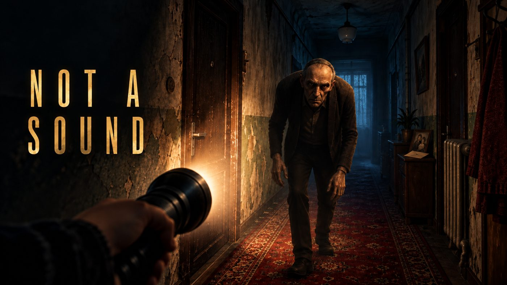
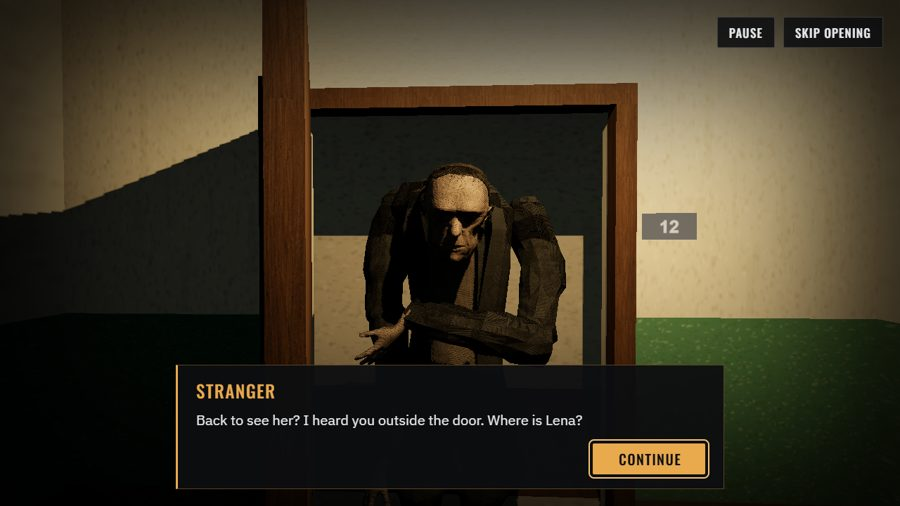
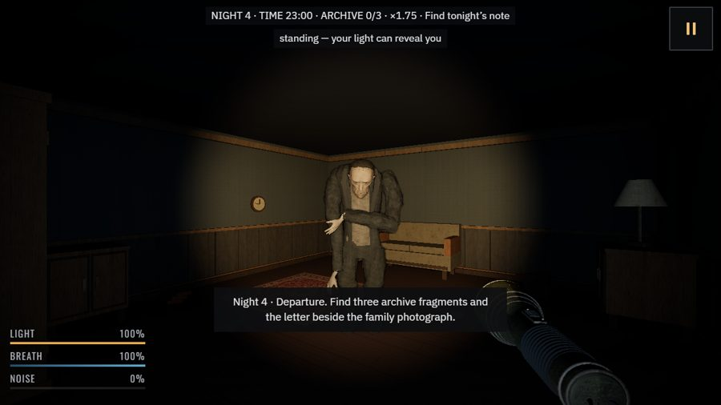
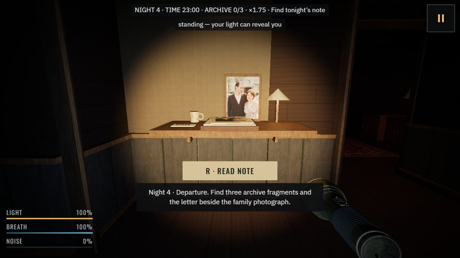

Not a Sound / Ни звука
Сюжетный стелс-хоррор от первого лица · браузер (ПК и мобильные) · RU / EN
Вы в чужой квартире, а её жилец охотится на вас по звуку. Каждый шаг и луч фонаря могут вас выдать. Замрите в темноте, и вы для него исчезнете.
Идея
В большинстве хорроров враг вас видит. Здесь он вас слышит: идёт туда, где был шум, и проверяет места, где горел свет. Отсюда главное решение игрока на каждом шаге: бежать быстрее и шуметь или красться и терять время до рассвета. Тишина и темнота становятся оружием, а фонарь одновременно спасает и выдаёт.
Что делает игрок
- За ночь (до 7 минут) собирает три фрагмента семейного архива и читает записку до рассвета.
- Следит за шумом: бег громкий и тратит дыхание, ковры глушат шаги, Shift значит красться.
- Бережёт заряд фонаря, свет выдаёт его жильцу.
- После записки начинается обыск: 5 секунд, чтобы найти шкаф, закрыть дверцу и погасить свет.
- Замечает, как меняется квартира: лампа тускнеет, появляется вторая чашка, фотография отворачивается к стене.
История
1987 год, обычная советская квартира. Вы просто возвращались домой, но сосед Виктор принял вас за другого и не отпускает. Письма, фотографии и табели смен постепенно раскрывают историю Виктора и Лены, которую он всё ещё ждёт. Финал седьмой ночи выводит из подъезда в солнечный двор.
После сюжета
Открывается свободный режим: квартира дня, растущая сложность, несколько жильцов одновременно, четыре вида фонарей, рекорды.



Чем выделяется и почему интересно
- Звук как основная механика: враг реагирует на то, что игрок делает, а не на скрипт. Каждая погоня получается своей.
- Короткие ночи по 5–7 минут: удобно для стримов и для «ещё одной попытки».
- Атмосфера позднесоветской квартиры: знакомая и редкая для Steam.
- Скримеры можно отключить, поэтому игра подходит и тем, кто не любит резкие пугалки, но любит напряжение.
Коммерческий потенциал
Инди-хорроры от первого лица стабильно продаются в Steam и хорошо заходят стримерам и в короткие видео: реакция на поимку и «замри, он рядом» отлично режутся в клипы. Модель: премиум, ориентир 5–8 $, демо на Steam Next Fest для сбора вишлистов. Язык уже RU/EN, сохранения есть, управление с ПК и тача.
План полной версии (6 месяцев)
| Месяц 1 | Steam-сборка (обёртка Electron), настройки графики, оптимизация под слабые ПК, геймпад. |
| Месяц 2–3 | Новый контент: подъезд и соседние квартиры, 2–3 жильца с разным поведением (слышит, видит свет, ходит по расписанию), ещё 5–7 сюжетных ночей. |
| Месяц 4 | Звук и атмосфера: озвучка ключевых сцен, звуковой дизайн шагов и комнат, локализация на 5–6 языков. |
| Месяц 5 | Публичное демо, Next Fest, плейтесты со стримерами, правки баланса по данным. |
| Месяц 6 | Полировка, достижения Steam, релиз. |
Как сделана с AI
- Я: идея, геймдизайн, баланс ночей, сценарий и записки, плейтесты, все решения по тому, что оставить и что переделать.
- Claude Code и Codex: код по моим ТЗ: поведение жильца (слух, обыск, обход шкафов), генерация квартир, кампания и сохранения, UI, мобильное управление, автотесты.
- Генерация изображений (GPT Image): текстуры мебели и обоев, архивные фотографии 1987 года для сюжета, обложки.
- Claude Design: макет интерфейса меню и журнала.
- Suno: музыка меню и игры, генерировалась скриптом через API. Звуковые эффекты синтезируются прямо в коде.
Процесс: я формулирую задачу, AI делает, я играю, нахожу проблемы и даю следующую итерацию. Игра прошла больше 30 таких версий.